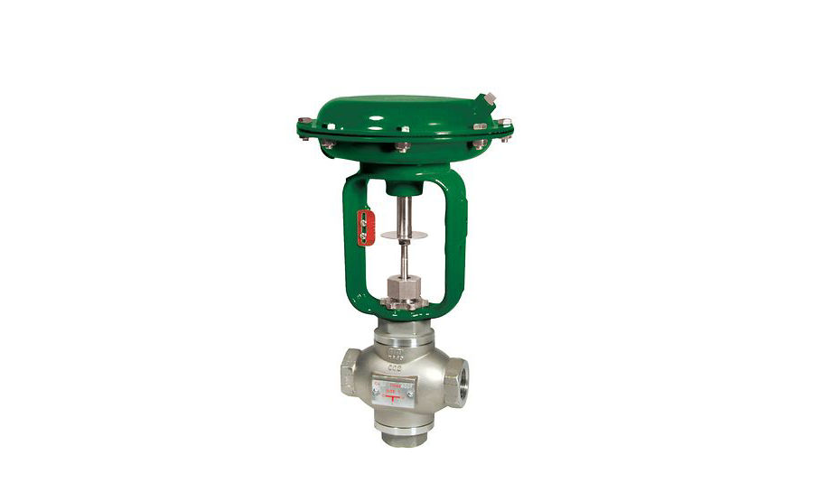
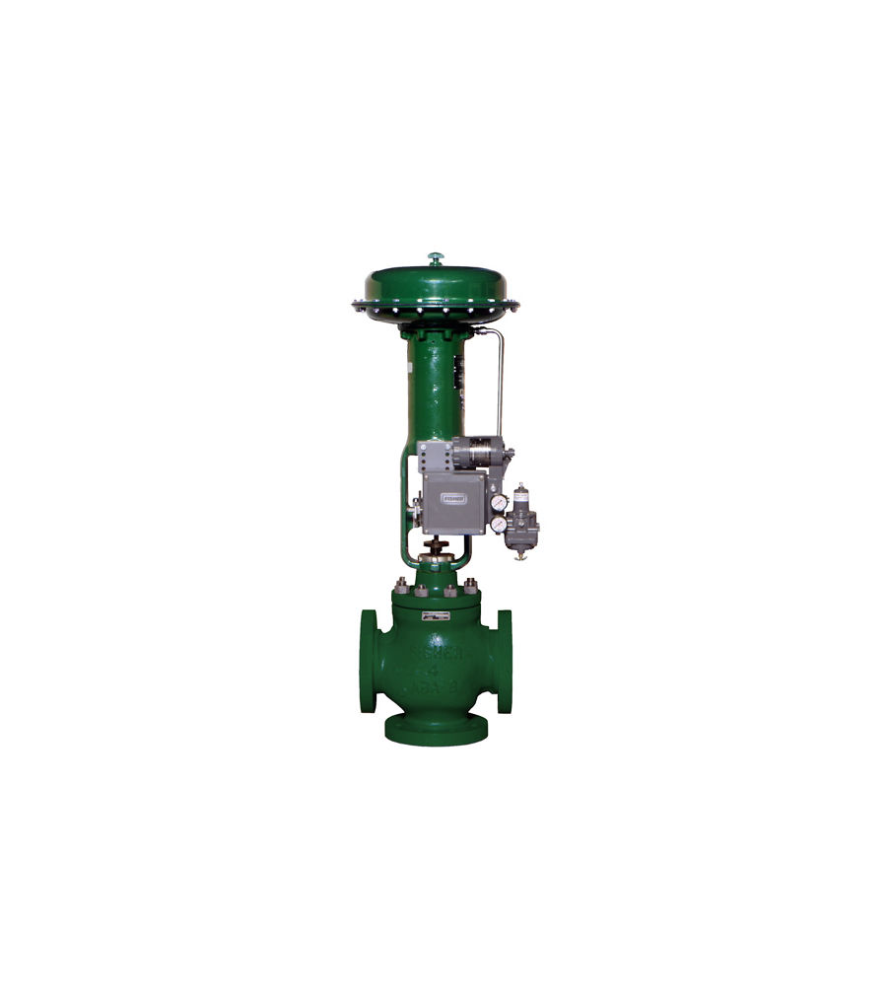

Fisher Baumann 24003 Three-Way Control Valve
Van điều khiển 3 ngã Fisher 24003. The Fisher Baumann 24003 three-way control valve delivers reliable mixing or diverting service with durable…
Van điều khiển 3 ngã Fisher (GX 3-way, YD/YS, Baumann 24003) để trộn hoặc chia dòng trong trao đổi nhiệt và hệ thống nhiệt.
Fast Group cung cấp van điều khiển 3 ngã Fisher chính hãng, đủ CO/CQ. Mỗi model có trang riêng với mô tả, biến thể, tài liệu kỹ thuật và hướng dẫn gửi RFQ.

Van điều khiển 3 ngã Fisher 24003. The Fisher Baumann 24003 three-way control valve delivers reliable mixing or diverting service with durable…

Van điều khiển 3 ngã Fisher YD. Fisher YD three-way cage-guided valves are designed for throttling or on/off service, and are available in…

Van điều khiển 3 ngã Fisher YD/YS. Fisher YD and YS three-way cage-guided valves are designed for throttling or on/off service and are…

Van điều khiển 3 ngã Fisher YS. Fisher YS three-way cage-guided valves are designed for throttling or on/off service and is available an…
Trụ sở TP. Hồ Chí Minh và văn phòng Vũng Tàu đều tiếp nhận RFQ, tư vấn cấu hình và bàn giao bộ chứng từ CO/CQ; bảo hành chính hãng 12 tháng kể từ ngày giao hàng. Yêu cầu gửi trong giờ làm việc được phản hồi trong cùng ngày; giao hàng toàn quốc.
150/41 Nguyễn Cư Trinh, P. Cầu Ông Lãnh
51 Lê Văn Lộc, P. Vũng Tàu